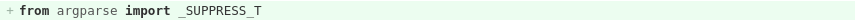
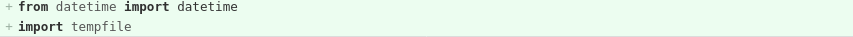

Pymi không khuyến khích học viên dùng vscode
Visual Studio Code, hay vscode, là chương trình editor mã nguồn mở của Microsoft, rất thành công và phổ biến trong giới lập trình viên, hỗ trợ rất nhiều ngôn ngữ, không to nặng như IDE Visual Studio, luôn nằm trong top các editor phổ biến nhất thế giới.
Gần đây, VSCode bắt đầu trở nên “tai tiếng” khi Microsoft mặc định bật sẵn “telemetry” để thu thập thông tin người dùng, nhưng đáng quan ngại hơn, khi những “plugin” quan trọng lại là “mã nguồn đóng”, phiên bản tắt telemetry, VSCodium không thể sử dụng Marketplace để cài plugin như VSCode (vì lý do bản quyền). NHƯNG đó không phải vấn đề của chúng tôi ở đây.
{kind=link}
PyMi cũng từng giới thiệu vscode cho học viên với mục đích có thể dùng thứ mà đa số “mọi người đi làm” đều dùng, cài đặt đơn giản, chạy trên cả 3 hệ điều hành Windows/MacOS/Ubuntu. Cho đến khóa học PyMi 2210, khi chứng kiến tới 3 học viên nộp bài sai với những nội dung sau:
 
khi mà học viên chưa hề học import nên tất nhiên không biết nó là gì. VSCode tự tỏ ra thông minh và import lung tung vào giúp.
Giải pháp: sử dụng những editor đơn giản, không tạo sự “bất ngờ thú vị” như vậy.
- Trên cả 3 hệ điều hành có thể cài geany, sublime text
- Trên Ubuntu có sẵn gedit, có thể cài geany.
- Trên Windows có thể cài Notepad++
- Hay vim và emacs luôn ở đó hàng 3-4 chục năm nay.
sau này đi làm bạn hoàn toàn có thể thích dùng gì thì dùng, lúc đó có kinh nghiệm rồi thì vscode nó làm sai mình vẫn biết mà sửa (nếu mình cẩn thận, chắc thế?!!!).
Đăng ký ngay tại PyMI.vn để học Python tại Hà Nội TP HCM (Sài Gòn), trở thành lập trình viên #python chuyên nghiệp ngay sau khóa học.